Self-Paired DPO in Four Toys
We edit a flow policy with negative labels only. Self-paired DPO (SDPO) pairs each logged negative with fresh samples from the base policy. This page shows each toy, each method, and how each method changes what the policy samples.
The four toys go from a 2-D point cloud to a long robot course. The first two toys measure mass on a ring of modes. The last two toys measure clean success of a point robot.
Every figure on this page comes from a new seed-0 run with the sweep settings. Every table comes from the sweep files. The Sources section gives the file for each number.
An anchored KTO with an extra unlabelled pool is better at 1, 2 and 4 bad modes.
Fresh SDPO at β ≥ 10 removes almost nothing when 2 or more modes are bad.
NPO, KTO, rerouting and filtering are at or below the base policy.
With re-collected negatives, fresh SDPO reaches 0.925 clean success from 0.791.
Terms
Each term has one definition here. The page uses each term only in this sense.
- flow policy
- A network that maps a Gaussian noise vector ξ to an action. It integrates a learned velocity field from ξ to the action (rectified flow). In toys 1 and 2 the action is a 2-D point. In toys 3 and 4 the action is a chunk of 8 velocity steps.
- πref (base policy, B0)
- The policy before the edit. It stays frozen. Every method starts from it.
- logged noise ξl
- The noise that produced a logged action. The toys record it with each rollout.
- negative (loser al)
- A logged action with a "bad" label. The edit gets negatives only. It gets no positive labels.
- winner aw
- For SDPO: a fresh sample from πref at the same state as the negative. It has no label. On average it is better than the negative, because most πref samples are good.
- flow loss lθ(a; ξ, t)
- The flow-matching loss of policy θ on action a, with noise ξ and time t. A low loss means that θ explains a well.
- implicit reward r(a)
- r(a) = lref(a) − lθ(a). It is positive when θ explains a better than πref does.
- SDPO
- Self-paired DPO. A DPO loss on (winner, negative) pairs, where the winner comes from πref itself. The formula is below.
- fresh / pinned
- Two SDPO versions. Fresh scores winner and negative at independent new noises. Pinned scores both at the logged noise ξl of the negative.
- β
- The DPO temperature. A large β makes the loss saturate after a small change. A small β gives a large edit.
- gate
- σ(β(rl − rw)), the weight of one pair in the gradient. The gate closes (goes to 0) when the margin is satisfied.
- dose k
- Gradient steps per labelled row. Toy 4 sweeps k from 1/32 to 16.
- G
- Change in clean success against the base policy, in percentage points. Each run is paired with the base rollout of its own task. Toys 3 and 4 use G.
- tv_to_ideal
- Total variation between the sampled mass per mode and the ideal mass: uniform over kept modes, zero on bad modes, zero off the ring. Lower is better. Toys 1 and 2 use it.
- forgotten mass
- Mass on the bad modes divided by the mass πref puts there (
neg_mass_ratio). 1 means no change. 0 means fully removed. - retain TV
- Total variation among the kept modes against πref, after renormalisation. It measures collateral damage.
- off mass
- Share of samples farther than 3 standard deviations from every mode centre.
Each negative gets K = 8 winners from πref at its own state. A training step draws one winner per pair.
The pinned version compares winner and loser through the same noise. So it gives a direct push on the map from that noise to an action. The fresh version compares two independent draws. So it gives a weak push on the whole distribution at that state.
Methods compared
All methods get the same logged negatives. Methods with a "+ pool" tag also use unlabelled πref samples. B1 is the only method with positive labels. It is a reference, not a competitor.
| Name on this page | What it does | Toys |
|---|---|---|
| References | ||
| B0 | πref, no edit. | 1–4 |
| B1 | Behaviour cloning on 512 samples from kept modes. Needs positive labels. | 1 |
| Preference-style baselines | ||
| NPO | Negative preference optimisation: (2/β)·softplus(β·r) on the negatives. It lowers the likelihood of each negative, with saturation. | 1–4 |
| KTO | KTO with undesirable examples only. The reference point comes from other states. | 1–4 |
| KTO + anchor + pool | KTO β = 10 plus flow matching on πref samples far from every negative (_Anf_dist). | 1 |
| Rerouting (our earlier family) | ||
| Reroute | Moves each negative's logged noise to a new πref resample as target (R_ours_neg). | 1, 2 |
| Reroute near | Target = nearest πref decode at least 4 mode-std from every negative; support = logged noise plus 4 jitters (R_near_nf_nhood_neg). | 1 |
| Hop | From ξl, steps along random noise directions until the decode leaves the negative's basin; trains on jittered noises that stay in that basin (R_hop_bsup_neg). | 2, 3 |
| Hop + veto + pool | Hop, plus a veto from the other negatives' basins and a masked anchor on unlabelled samples (R_hopB_bsup_neg_AMdist). | 2 |
| Controls (toy 3) | ||
| FILTER | Rejection at run time: re-samples a chunk when it looks like a logged negative. No training. | 3 |
| RAND | πref plus a random weight edit with the same norm as the trained edit. | 3, 4 |
| SDPO family | ||
| SDPO fresh βX | SDPO, independent noises, β = X. | 1–4 |
| SDPO pinned βX | SDPO, both terms at the logged noise, β = X. | 1–4 |
| SDPO hop-pinned | Pinned SDPO with the hop target as the only winner. | 2 |
| Own-noise, iterated, shift | Toy 4 variants: winners at their own noise; SDPO repeated with the last result as πref; πref replaced inside one run. | 4 |
| Re-collected negatives (S) | One run in S segments. After each segment, πref becomes the current policy, and new negatives are collected and labelled from it. | 4 |
| Winner-only / loser-only | Only the −log σ(β·rw) term, or only the −log σ(−β·rl) term. | 4 |
An 8-mode ring
An unconditional flow learns an 8-mode Gaussian ring in 2-D. Then we mark n_forget modes as bad. The edit gets n_neg logged negatives per bad mode, each with its noise.
The sweep uses n_forget 1–4, n_neg 1–32 and 5 seeds. Every method trains for 5,000 steps at learning rate 10−4, batch 256.
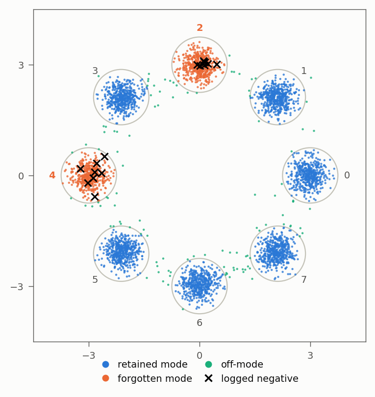
Results over the sweep
The table gives tv_to_ideal, averaged over seeds 0–4 and n_neg 1–32. Lower is better. The shaded cells mark the best and worst method in each column, without B1.
| Method | 1 of 8 | 2 of 8 | 3 of 8 | 4 of 8 | overlap σ 0.45 | overlap σ 0.6 |
|---|---|---|---|---|---|---|
| B0 (no edit) | 0.145 | 0.266 | 0.388 | 0.509 | 0.296 | 0.293 |
| NPO β100 | 0.132 | 0.236 | 0.374 | 0.498 | 0.264 | 0.264 |
| KTO β100 | 0.180 | 0.383 | 0.503 | 0.542 | 0.274 | 0.261 |
| Reroute | 0.611 | 0.557 | 0.447 | 0.425 | 0.495 | 0.462 |
| Reroute near | 0.301 | 0.320 | – | 0.180 | 0.279 | 0.434 |
| SDPO fresh β1 | 0.501 | 0.126 | 0.234 | 0.374 | 0.295 | 0.280 |
| SDPO fresh β25 | 0.133 | 0.258 | 0.383 | 0.504 | 0.285 | 0.283 |
| SDPO pinned β1 | 0.600 | 0.533 | 0.461 | 0.375 | 0.504 | 0.546 |
| SDPO pinned β25 | 0.159 | 0.213 | 0.312 | 0.428 | 0.244 | 0.244 |
| KTO + anchor + pool | 0.039 | 0.039 | – | 0.042 | 0.200 | 0.348 |
Source: results/sdpo_results.md, "main sweep" and "overlapping modes" sections. Overlap columns pool seeds 0–9 and n_forget 1/2/4. "–" means the arm was not run there. B1 (positives) reaches about 0.005 forgotten mass at every n_neg (docs/RESULTS.md).
- Fresh SDPO β1 is the best negatives-only method at 2 and 3 bad modes. It beats NPO in 28 of 30 paired cells at 2/8 and in 30 of 30 at 3/8.
- At 1 bad mode, fresh SDPO β1 breaks the ring. Its tv_to_ideal is 0.501, against 0.145 for no edit. The β25 version ties NPO (0.133 vs 0.132).
- At 4 bad modes, "reroute near" wins. It reaches 0.180, against 0.374 for the best SDPO.
- An unlabelled anchor beats every negatives-only method. KTO + anchor stays near 0.04 for 1, 2 and 4 bad modes.
What each method samples
The next figure decodes the same 4,000 noises through each edited policy. Each panel title gives forgotten mass and retain TV for this one run.
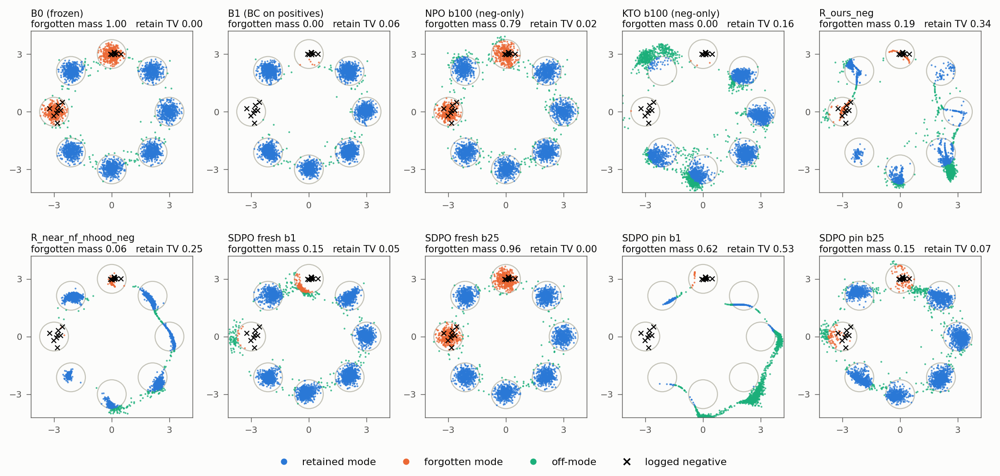
How the noise map changes
A flow policy is a map from noise to action. The next figure colours each noise in [−3, 3]² by where the policy sends it.
The figure shows the main difference between fresh and pinned SDPO. Fresh SDPO β25 keeps the map. Pinned SDPO β25 moves the logged noises out of the bad wedges. Pinned SDPO β1 sends most of the plane off the ring.
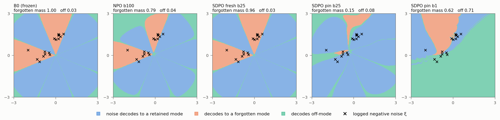
Path during training
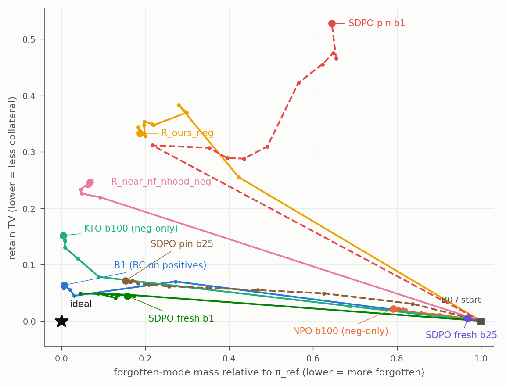
A ring that rotates with a condition
Toy 2 adds a condition c in [0, 1]. The ring turns by 1.5 mode spacings over c, and its radius is 2.5 + c.
Each logged negative has its own condition. So no two negatives share a state. This matches a robot, where a state does not repeat.
The sweep uses 4 layouts of the bad modes at n_forget = 4: random, contiguous (contig), alternating (alt), pairs, and a block of 3 plus 1 (b3p1).
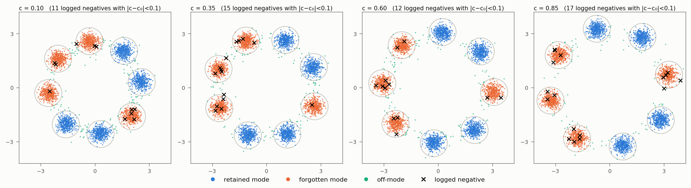
Results over the sweep
| Method | random 1/8 | random 2/8 | random 4/8 | contig 4/8 | alt 4/8 | pairs 4/8 | b3p1 4/8 |
|---|---|---|---|---|---|---|---|
| B0 (no edit) | 0.149 | 0.270 | 0.516 | 0.513 | 0.514 | 0.516 | 0.515 |
| NPO β100 | 0.143 | 0.255 | 0.516 | 0.488 | 0.519 | 0.509 | 0.512 |
| KTO β10 | 0.270 | 0.519 | 0.915 | 0.594 | 0.898 | 0.893 | 0.900 |
| Reroute | 0.511 | 0.567 | 0.611 | 0.590 | 0.641 | 0.525 | 0.573 |
| Hop | 0.188 | 0.256 | 0.355 | 0.471 | 0.261 | 0.345 | 0.376 |
| Hop + veto + pool | 0.106 | 0.197 | 0.318 | 0.203 | 0.457 | 0.246 | 0.251 |
| SDPO fresh β1 | 0.430 | 0.344 | 0.544 | 0.434 | 0.550 | 0.528 | 0.505 |
| SDPO fresh β10 | 0.129 | 0.252 | 0.506 | 0.493 | 0.511 | 0.503 | 0.504 |
| SDPO fresh β25 | 0.135 | 0.260 | 0.511 | 0.505 | 0.512 | 0.510 | 0.510 |
| SDPO pinned β25 | 0.185 | 0.257 | 0.530 | 0.431 | 0.534 | 0.486 | 0.466 |
| SDPO hop-pinned β25 | 0.164 | 0.248 | 0.460 | 0.435 | 0.480 | 0.425 | 0.440 |
tv_to_ideal, seeds 0–4. Source: results/sdpo_results.md, "Conditional toy" sections. Seeds 5–9 and 10–14 give the same order (same file).
- SDPO beats NPO and plain reroute, but loses to hop. The best SDPO arm is better than NPO in 16–20 of 20 paired cells at 4/8. At 4/8, hop is better than every SDPO arm in the random, alt, pairs and b3p1 layouts.
- Fresh SDPO at β ≥ 10 does almost nothing at 2–4 bad modes. Its forgotten mass is 0.88–0.99. Its retain TV stays at or below 0.03.
- One bad mode is the only case where fresh SDPO helps. At 1/8, fresh β10 reaches 0.129, better than NPO in 17 of 20 cells. Only hop + veto is better (0.106).
- Pinned SDPO is best only with contiguous bad modes. There it ties NPO β10 and hop.
- With many bad modes, the winners are often bad. At 4 of 8 bad, 45–50% of the πref winners land in another bad mode (
sdpo_pos_frac_in_forget). Then the pair says little about which way to move.
What each method samples
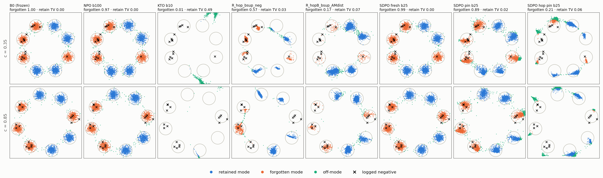
Short robot courses
A point robot drives from a start to a goal past 1 to 3 disc obstacles. Each seed has 200 setups: 160 for training and 40 held out.
The policy decodes a chunk of 8 velocity steps from noise at the current state, runs it open loop, and then replans. An episode has at most 6 chunks.
An episode is negative when it hits an obstacle or when its jerk goes above 1.2·10−3. The label covers the whole episode. So every chunk of a negative episode is a loser, and only about 30% of them are the bad chunk.
On seed 0 the base logs 245 negative episodes (821 chunk rows) on 128 of the 160 training setups. Evaluation uses 64 shared noises per setup.
We report three setup groups: neg (training setups with negatives), noneg (training setups without negatives) and held (new setups). Base clean success is 0.855 on neg (9-seed mean).
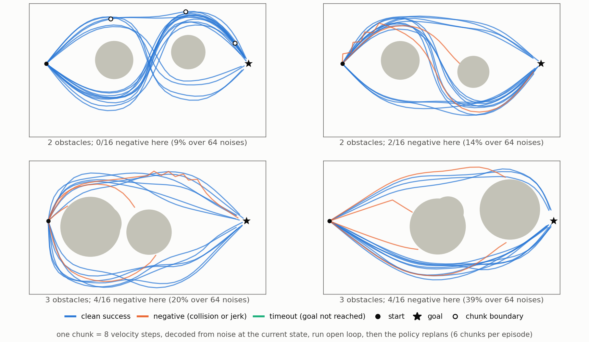
Results with native labels
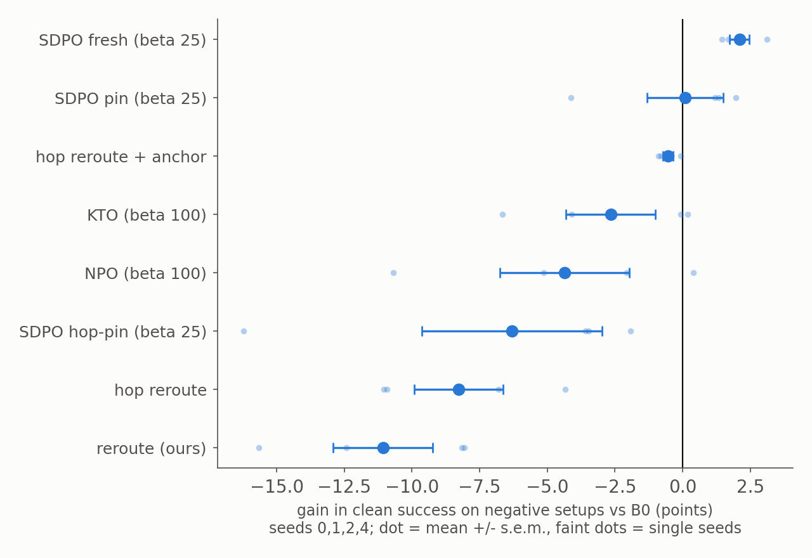
cells_full_st5000_m64.csv.Results when the labels go wrong
The stress round changes the labels and keeps the evaluation. It uses 9 valid seeds and 990 runs. The conditions are below.
- native
- Every chunk of each negative episode. The practical case.
- oracle
- Only the chunk that crashed or jerked. Privileged; not a method.
- pad18
- Native plus 18 good chunks per negative episode. The bad chunk becomes about 5% of the rows.
- flip0.1, flip0.25
- That share of negative episodes is replaced by a clean episode of the same setup.
- placebo
- Every labelled episode is clean. It tests whether a gain comes from the labels.
- recall0.5
- Only half of the negative episodes get a label.
- cover0.25
- Only a quarter of the setups have labelled negatives.
| Method | native | flip0.1 | flip0.25 | pad18 | placebo | recall0.5 | cover0.25 | oracle, epoch-matched |
|---|---|---|---|---|---|---|---|---|
| SDPO fresh β25 | +2.5 | +1.7 | +0.8 | −0.9 | −5.0 | −1.5 | −6.4 | +2.0 |
| SDPO pinned β25 | +0.7 | +0.3 | −1.4 | −9.0 | −42.9 | −7.3 | −16.9 | +8.0 |
| NPO β100 | −2.7 | −3.4 | −6.1 | −5.9 | −20.5 | −3.7 | −6.2 | +1.0 |
| KTO β100 | −3.0 | −2.7 | −4.2 | −9.8 | −20.1 | −6.8 | −6.0 | +1.6 |
| Hop + local anchor | −0.2 | −0.5 | −1.2 | −0.9 | −3.8 | −3.3 | −4.5 | −3.9 |
| FILTER | −3.0 | −3.2 | −3.7 | −9.6 | −5.2 | −2.7 | −1.1 | – |
G on the neg group, points, 9 seeds; standard errors are 0.1–3.3 (see source). Higher is better; shading marks the best and worst per column. The last column scales steps with rows (exploratory, not pre-registered); the other columns use 5,000 steps. Source: results/robo_stress/RESULTS.md.
- Fresh SDPO β25 is the only method with a native gain. +2.5 ± 0.2 on neg and +2.2 ± 0.3 on held. It beats a random edit of the same norm by +3.0 ± 0.2.
- The gain comes from the labels. With placebo labels, fresh SDPO loses 5.0 points. So native minus placebo is +7.5 ± 0.3.
- Fresh SDPO survives 10–25% false labels. It keeps +1.7 and +0.8. Dilution (pad18), missed labels and low coverage remove the gain.
- Pinned SDPO needs the exact bad chunk. With oracle chunks and enough steps it gains +8.0, the best result in this toy. With native labels it gains nothing, and with padding it collapses (−62 to −85 when steps scale with rows). Credit assignment is the lever for pinned SDPO.
- β matters for fresh SDPO. β = 25 gives +2.5, β = 50 gives +2.0, β = 100 gives +1.2. β = 10 gives −1.9 and β = 5 gives −23.1.
What each method does on held-out setups
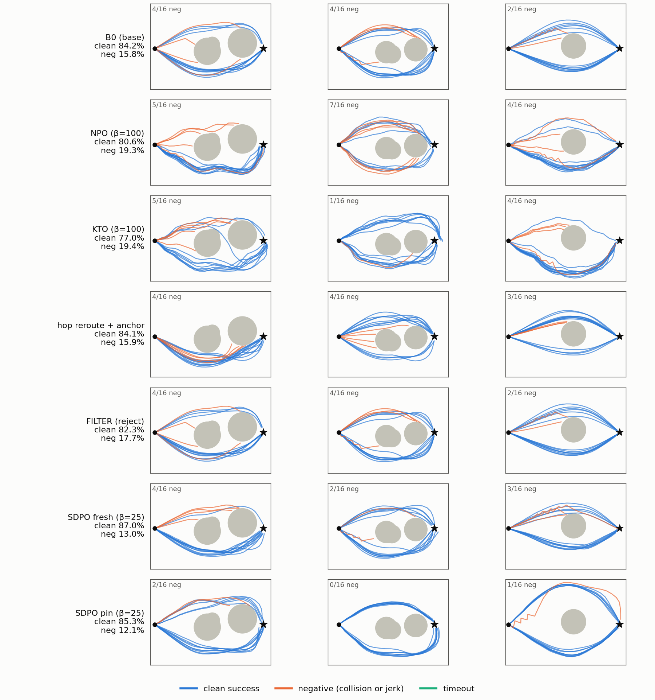
What each method samples at one state
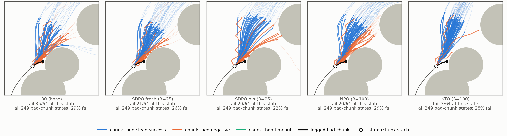
Long robot courses
A point robot drives a course of 4 waypoint segments. Each segment has 1 to 3 disc obstacles. Each segment turns by up to 60°.
A contact does not end the episode. The robot slides along the obstacle and continues. So a failure can come from a drift that started many chunks earlier.
The policy decodes 8 velocity steps per chunk and then replans. An episode has at most 18 chunks.
An episode is negative when it touches an obstacle or when its jerk goes above 1.2·10−3. A timeout is not negative.
The base policy reaches the goal in 94.5% of episodes. Its clean success is 0.791, and 18.5% of its episodes are negative (5-seed mean).
The data has up to Ns = 512 labelled courses. Each result uses 128 held-out courses × 32 noises and 5 seeds.
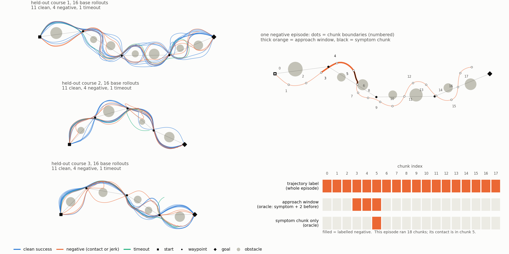
The dose decides the result
The first runs used 5,000 steps. At that dose, pinned SDPO, NPO and KTO all collapsed. A random edit of the same size did no harm, so the collapse came from the direction of the edit.
The dose sweep showed that 5,000 steps is an overdose for pinned SDPO. At a small dose it is the best method.
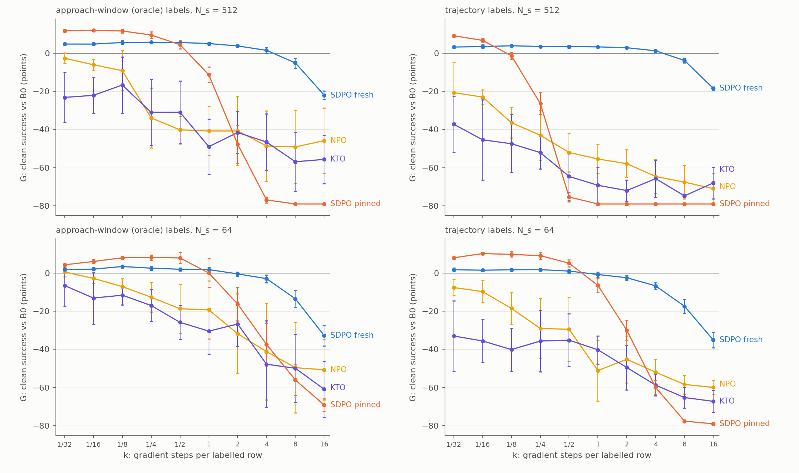
results/robol/KSWEEP.md.- The best dose for pinned SDPO is a fixed number of steps. It is about 100–250 total steps at every Ns. A rule that scales steps with rows overdoses large datasets.
- Trajectory labels cost little. Pinned SDPO reaches 9.2–10.3 points with trajectory labels, against 8.2–12.0 with oracle windows.
What each method does on held-out courses
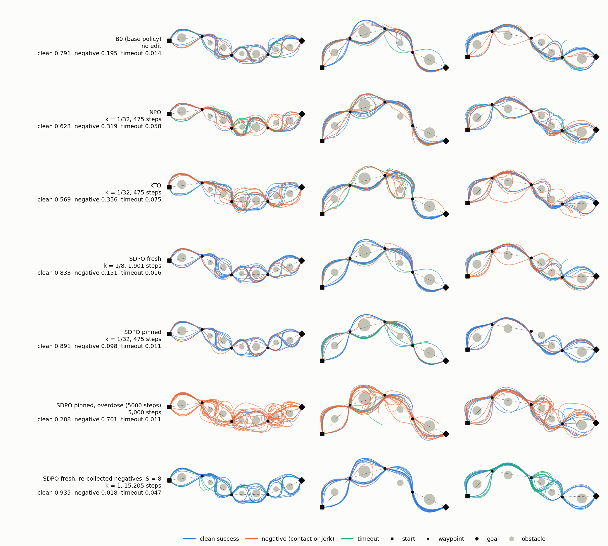
What each method samples at one state
The next figure decodes 64 chunks at one state before a logged contact. Each chunk is coloured by the outcome of the rollout that continues from it.
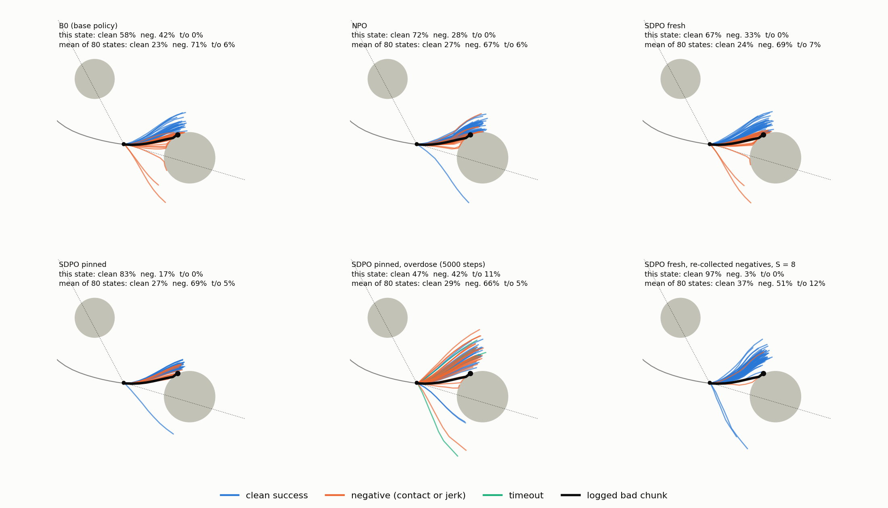
More rounds of negatives help, up to a limit
Variants that reset πref without new negatives make the policy worse. Iterated pinned SDPO goes from +9.2 to −8.0 to −51.0 over three rounds (trajectory, Ns 512).
New negatives at each reset change this. Fresh SDPO with trajectory labels climbs from +3.9 (1 segment) to +13.4 (8 segments) at Ns 512. Pinned SDPO with approach windows reaches +14.1 at 2 segments.
Each segment needs a new round of labels. Eight segments use about eight times the labels of one run.
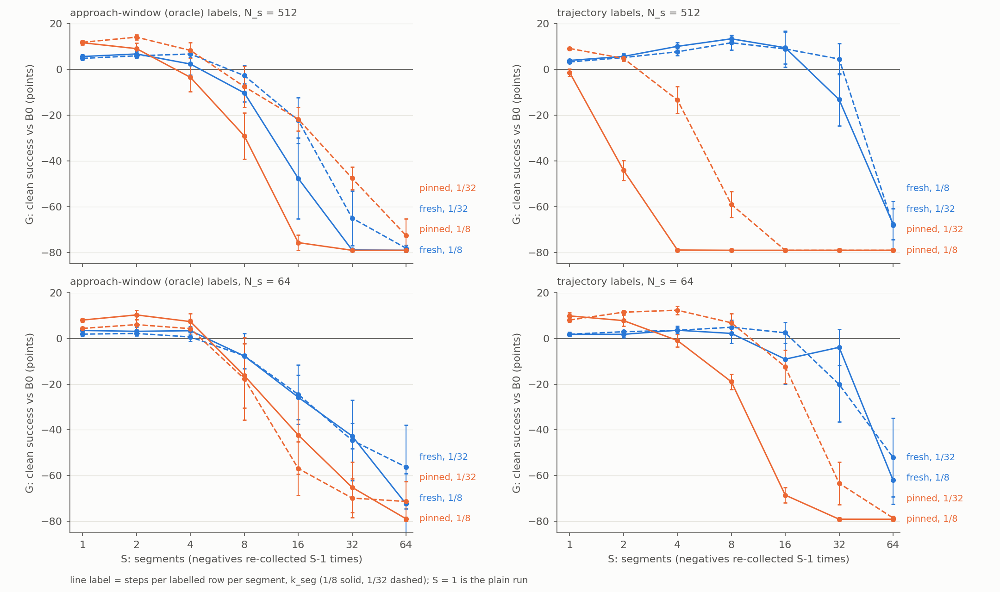
results/robol/SEGMENTS.md, VARIANTS.md.Pinned SDPO moves the whole distribution
We measured the energy distance from the base, on held-out states, at fixed step counts. Energy distance compares two sets of sampled actions at a state.
At matched steps, pinned SDPO drifts 3 to 10 times more than fresh SDPO. The drift is the same on labelled and held-out states. So it is not local to the negatives.
The loser term alone destroys the policy within 50 steps. The winner term alone barely moves it. Pinned SDPO closes its gate to about 0.2. The gate of fresh SDPO stays near 0.5.
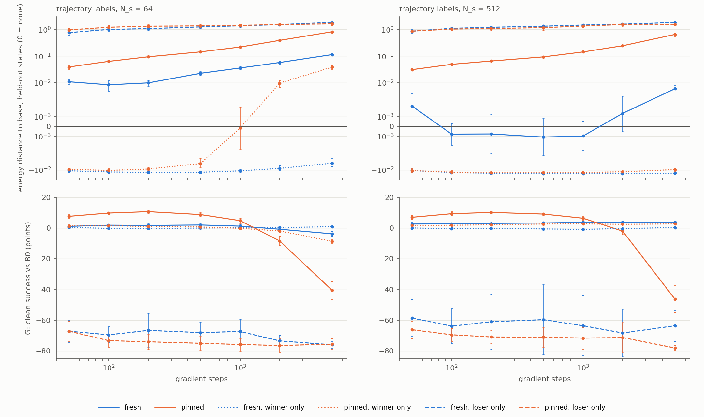
results/robol/DRIFT.md.How each method changes what the policy samples
The four toys show the same pattern for each method.
- Fresh SDPO gives a small, broad change. Its margin compares two independent draws, so the margin is noisy and the gate stays open. At β ≥ 10 it keeps the noise map of πref. It removes little bad mass in the 2-D toys, and it gains a few safe points in the robot toys. It is the most robust method under label noise and over a wide dose range.
- Pinned SDPO rewrites the map at the logged noises. It moves those noises out of the bad region (toy 1 noise map). The optimiser satisfies the pinned margin by moving the action distribution at every state. At a small dose this gives the largest gains (toy 4). At a large dose it makes the policy jerky or broken.
- β sets the size of the edit. With β = 1, fresh SDPO removes most bad mass in toy 1. Pinned SDPO at β = 1 breaks the ring.
- NPO and KTO push mass away without a target. NPO β100 changes little. KTO removes bad mass but sends it off the ring (toys 1, 2) or into new failures (toys 3, 4).
- Rerouting needs a good target. Plain reroute moves mass between kept modes. Hop with a basin veto finds safe targets in the conditional ring and wins there. In the robot toys, hop does not beat the base.
- The winner is the anchor. The loser term alone destroys the policy in toy 4. The winner term keeps it near πref. SDPO is a stable negatives-only method because the winners come from πref itself.
Sources and method notes
Code and results are in ~/repos/toypref-report, branch sdpo-report. That branch merges robo-long and self-dpo.
Sweep tables: results/sdpo_results.md, results/practical_best.md, results/robo/summary_full_st5000_m64.csv, results/robo_stress/RESULTS.md, results/robol/{RESULTS,RESULTS_round2,KSWEEP,VARIANTS,SEGMENTS,DRIFT}.md.
Figure scripts: scripts/report/. Figure runs: /grogu/datasets/rollout/soumojib/toypref/report_{2d,robo,robol}.
All figures use seed 0. Single-run numbers in figure titles do not match the pooled tables exactly. The tables are the evidence. The figures show the mechanism.
The best doses in toy 4 come from the same evaluation courses. A real robot must choose its dose without that evaluation. So the toy-4 peaks are optimistic.